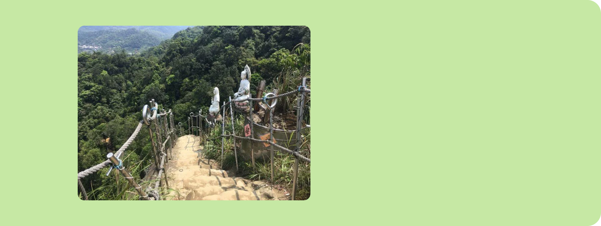

平溪老街
平溪老街有著古樸的風味，沿著斜斜的山
坡以及鐵道兩旁，可看見依序建蓋的古厝
房舍，附近的商家大多是傳統柑仔店、五
金行、小吃店等，可以看出當地居民簡樸
的生活日常。
第二個是《平溪老街》中華街的平溪
橋，不遠處是平溪知名美食「鐵道熱
腸」，可將平溪鐵橋橋墩、兩側民
房、火車一同拍下，也是個很經典的
拍攝角度。
再來是平溪很知名的場景，是臺灣
賣座電影《那些年，我們一起追的
女孩》男女主角放天燈許願的名場
景。
平溪郵局-全台最老郵筒
平溪郵局於日治時期昭和16年(1941年)
設立，稱作平溪三等郵便局、兼辦電信業
務，這種圓筒型郵筒以生鐵鑄造，造型接
近一個人的高度，在民國50年代還頗常
見，後來因為圓型郵筒較佔空間，都市拓
寬後大多拆除，平溪郵局前面郵筒因位於
地勢較高坡地而幸存下來，成為台灣使用
中最悠久的老郵筒。
沿著緩坡階梯而上，一整片星空牆面隨即映
入眼簾，由平溪國小學生創作的各式天燈，
寫上「大家平安」、「I LOVE YOU」、
「我愛郵政」等話語，在眾人高舉雙手歡呼
下，帶著祝福冉冉升空，平溪老郵筒也稱職
地在牆面伸出手指，引導遊客拾級而上，抵
達「老郵筒」所在地的平溪郵局。

孝子山
座落在平溪支線菁桐站與平溪站之間的
孝子山，其實是一個步道系統的總稱，
裡面矗立著好幾座獨立的山頭，包括孝
子山、慈母峰、普陀山、慈恩嶺，以及
中央尖等山峰。

山勢雖不如其他山來得高，但其陡峻的石
峰卻不容忽視。登孝子山最驚險的路程，
莫過於最後一段懸空鋼梯登頂路。但若順
利的登上這近幾乎垂直的岩壁，到了頂峰
可鳥瞰整個基隆河縱谷，由於群峰環繞，
大小山頭加總起來有20多座，因此被稱為
二十四孝山，由於山形酷似大陸黃山，故
孝子山也有「小黃山」之稱。
孝子山不以高度為名，而以山頂一段近
乎垂直懸空的鐵梯吸引山友登高，山頂
腹地狹小，每次僅能容納幾人站立，但
佇立其上可眺望基隆河縱谷，任憑耳邊
風聲呼嘯、衣袖飄飄，彷彿俠客登高望
遠。